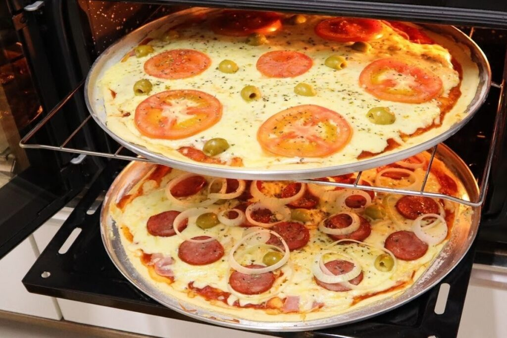

Home
Pizza Simples de Liquificador

Descrição
A pizza é um dos pratos mais populares do mundo. É mais vista como "confort food", um prato festivo, para dar prazer, mais que para alimentar propriamente.
É um prato que cai bem para receber amigos, para comemorar momentos especiais, e até mesmo um jantar a dois.
De origem italiana, também faz parte do repertório de todo aspirante a cozinheiro.
Receita Original
Ingredientes - Massa
- 1 xícara (de chá) de leite
- 1 ovo
- 1 colher (de chá) de sal
- 1 colher (de chá) de açúcar
- 1 colher (de sopa) de manteiga
- 1 e 1/2 xícaras (de chá) de farinha de trigo
- 1 colher (de sobremesa) de fermento em pó
- 1/2 lata de molho de tomate
Ingredientes - Cobertura
- 250g de muzzarela ralada grossa, ou em fatias
- 2 tomates fatiados
- azeitona picada
- orágano a gosto
Passo a Passo
- No liquidificador, bata o leite, o ovo, o sal, o açúcar, a manteiga, a farinha de trigo e o fermento, até que tudo esteja encorpado.
- Despeje a massa em uma assadeira de pizza, untada com manteiga, e leve ao forno pré-aquecido, por 20 minutos.
- Retire do forno, cubra com molho de tomate, a muzzarela, tomate e orégano, a gosto. Leve de volta ao forno até derreter a muzzarela.
- Sirva quente, acompanhada de alguma bebida gelada, podendo ser refrigerante, suco, cerveja ou vinho.
Outros acompanhamentos bem vindos para esse prato são azeitonas e linguiça calabreza, colocadas sobre a mozzarela, antes de retornar ao forno.